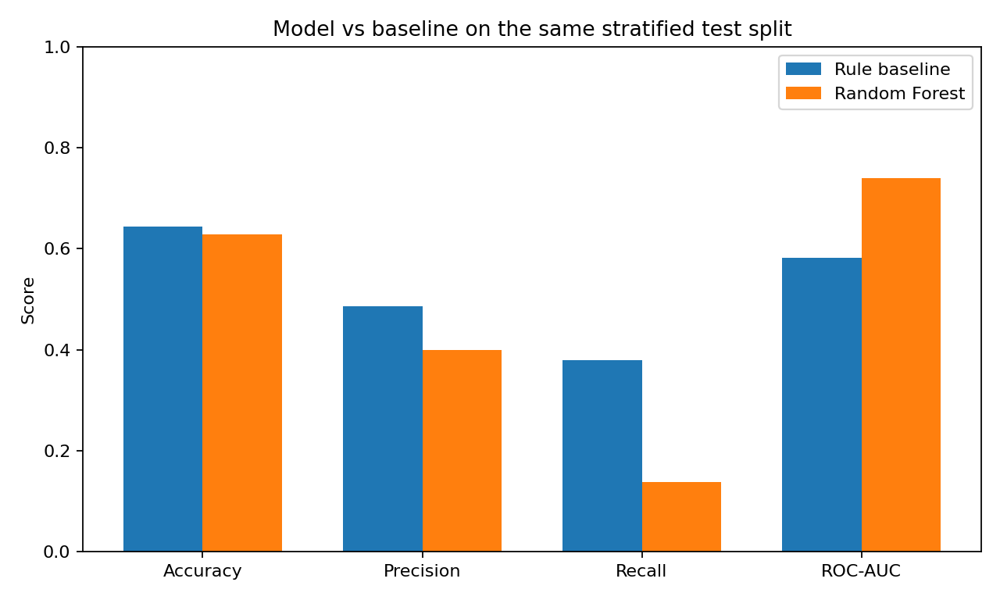
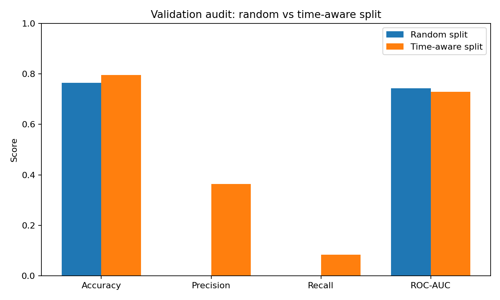
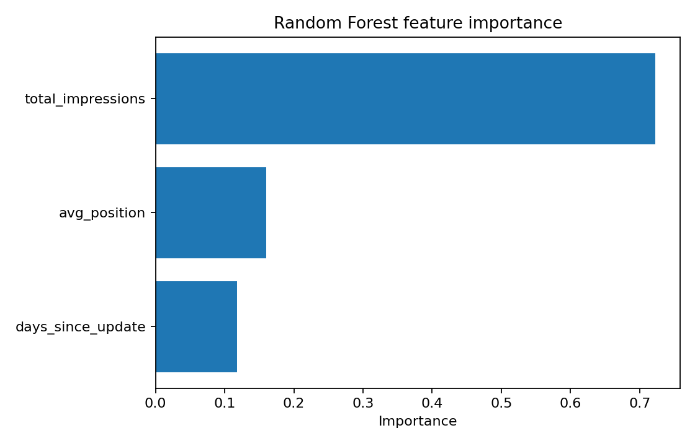

Abstract
This study asks whether observable search-performance features can support a practical queue for pages that may warrant SEO optimization. The prototype frames the task as binary classification, combines historical performance features with a Random Forest model, and compares it with a rule-based baseline under explicit validation and leakage checks. The submitted notebooks show that a label-derived feature can inflate ROC-AUC to 0.9395 while the same synthetic fixture falls to 0.5072 after the leaked feature is removed, illustrating why feature provenance matters. A later validation audit compares random and time-aware splits and shows that reported performance changes when the test window is moved forward in time. The resulting playbook is intentionally directional: scores prioritize human review and do not establish causal impact, production lift, or guaranteed ranking gains.
1. Introduction / Problem Statement
SEO teams often face more candidate pages than they can review manually. A simple “CTR below X%” rule is brittle because expected click-through varies by ranking position, query intent, seasonality, and SERP features. The working question is therefore:
The intended output is not an automatic edit. It is a ranked review queue that helps an editor decide where to investigate first.
2. Data
Week 03 declares the gsc_daily_url_metrics slice from the FlyRank internship warehouse.
March 1–31, 2026 is named as the mid-panel month; June 2026 is described as a sealed test month.
One row represents one unique URL on one date.
Exclusions and public safety
The Week 03 contract excludes daily URLs with fewer than 10 impressions to reduce low-volume noise, with the acknowledged trade-off of cold-start bias. The public-safe copy in this package replaces synthetic site URLs with example.com and contains no private search queries or client identifiers.
3. Methodology
Assumptions & features
The feature design emphasizes information that should be knowable at the decision moment: historical average position, historical impressions, historical CTR, position volatility, and URL depth. Later prototype notebooks simplify this to impressions, average position, and content age.
Label
The notebooks use proxy labels for “underperforming” or “needs optimization,” based on combinations such as high impressions and low CTR. This is a prioritization proxy—not a causal outcome and not a proof that a page should be changed.
Baseline
The Week 04 baseline is a rule-based heuristic using impression scale, CTR, and position. The Week 05 comparison evaluates the rule and Random Forest on the same stratified test split.
Model
Random Forest: 100 trees, maximum depth 4, fixed random state 42 in the reproducible capstone package.
Validation design
The audit explicitly tests a standard random split against a future-window time-aware split. The latter is the preferred framing for sequential search logs because it better represents deployment on later data.
Leakage check
The Week 03 experiment intentionally adds a label-derived clicks feature. Its ROC-AUC rises to 0.9395; removing the leaked feature lowers the score to 0.5072. The experiment is a warning about leakage, not evidence of model capability.
4. Results
All numbers in this section are generated from the synthetic fixtures used in the supplied weekly notebooks. They are included to make the audit inspectable and reproducible, not to imply performance on production data.
Model vs baseline
| Metric | Rule baseline | Random Forest |
|---|---|---|
| Accuracy | 0.708 | 0.620 |
| Precision | 0.650 | 0.512 |
| Recall | 0.536 | 0.454 |
| ROC-AUC | 0.677 | 0.731 |

Validation audit
| Metric | Random split | Time-aware split |
|---|---|---|
| Accuracy | 0.764 | 0.796 |
| Precision | 0.000 | 0.364 |
| Recall | 0.000 | 0.083 |
| ROC-AUC | 0.743 | 0.729 |

Feature importance

Interpretation: the model does not consistently outperform the simple rule across every metric in the supplied synthetic fixture. That is a useful finding: a more complex model should not be preferred merely because it is more sophisticated.
5. Limitations & Honest Framing
The supplied repository snapshot lacks the production dataset and the required capstone notebook, so production-scale claims cannot be independently checked from this package.
Several weekly notebooks generate simulated data with random functions. Their numbers are useful for demonstrating method, not for estimating real-world business lift.
“Underperforming” is a proxy classification target. It does not prove that a title change, refresh, or internal-linking action will improve traffic.
The low-impression exclusion can leave newly published or low-volume URLs underrepresented.
Search behavior changes over time. Model quality should be monitored and retrained when performance degrades.
6. Ranked Recommendations
- Use the score as a review queue, not a publishing engine.
Every proposed title, snippet, content, or internal-linking change should be checked by an editor.
- Prefer future-window validation.
For search logs, report a time-aware holdout as the primary generalization test and keep random splits as a secondary diagnostic.
- Preserve strict feature provenance.
Document when every feature becomes available and exclude anything derived from post-outcome events.
- Triage by reason code.
High-CTR-gap candidates → title/meta review; rank-decay candidates → content/internal-linking review; high-impression/low-CTR candidates → SERP/UX inspection.
- Monitor drift and pause after major search changes.
The Week 07 playbook proposes a retraining trigger when ROC-AUC drops below 0.80 and a temporary pause after major algorithm updates.
7. Reproducibility
The artifact is organized so a reader can inspect the weekly notebooks and the consolidated capstone notebook. GitHub Pages can serve static HTML directly from a repository; GitHub documents branch/folder and Actions-based publishing options.
work/notebooks/capstone.ipynb
docs/assets/
work/outputs/
8. Acknowledgments & Data Credit
Built on the FlyRank ML Internship dataset. FlyRank